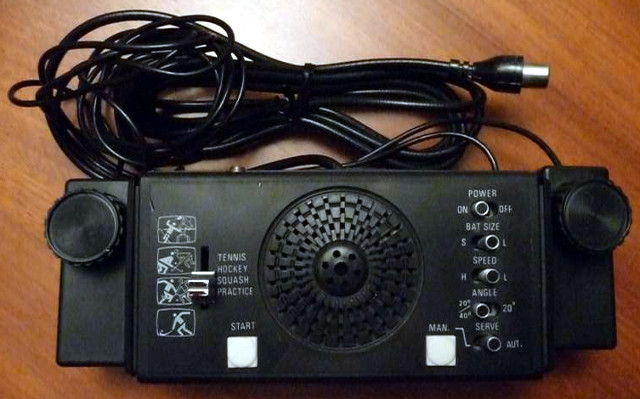
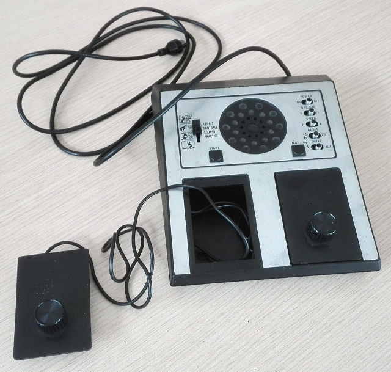
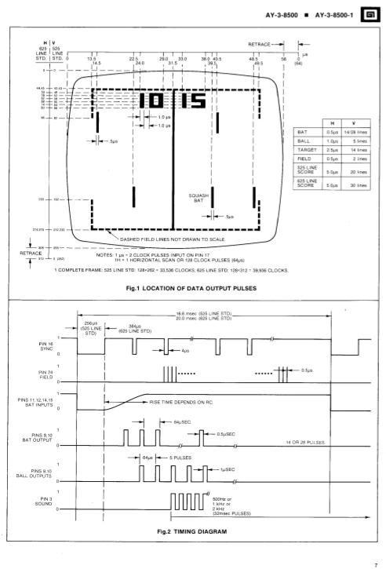
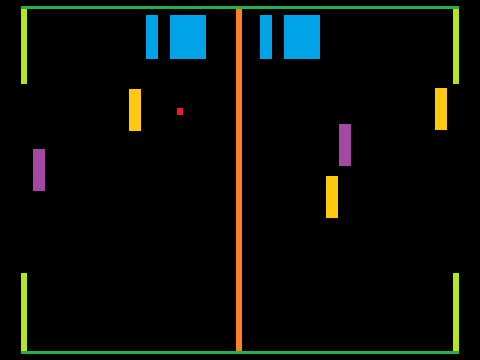
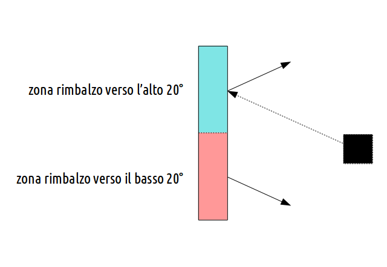
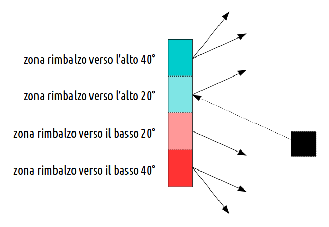
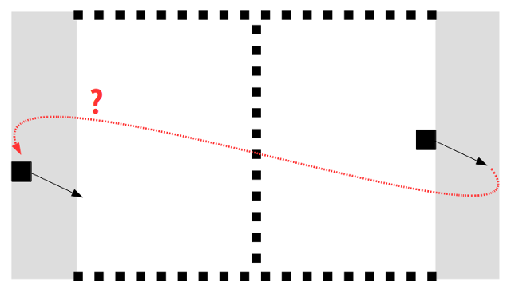

risorse | analisi del gioco pong
Pong è stato il primo videogioco cui abbia mai giocato, verso la fine degli anni settanta, su una consolle molto simile a questa:
Il “TV Game” della Tenko, modello PP-150 — una delle tante varianti
Qualche anno dopo (sarà stato il 2000 o giù di lì), spinto dalla nostaglia, ne comprai una a una fiera dell'antiquariato della zona per 1000 lire, senza garanzia che funzionasse:
La consolle acquistata alla fiera — senza marca, modello nè numero di serie.
La consolle fortunatamente funzionava. Ora giace inutilizzata, perché le moderne televisioni cui l'ho collegata non riescono ad agganciare il segnale generato dal modulatore.
Nell'autunno del 2016 ho provato a cimentarmi nella realizzazione di un emulatore della consolle che fosse il più fedele possibile all'originale; di seguito le informazioni raccolte nel frattempo, in attesa di completare il progetto.
La maggior parte delle consolle del tempo erano basate sul chip AY-3-8500 della General Instrument che implementava la logica di gioco oltre alla generazione del quadro video.
L'idea di scrivere un emulatore è nata nel momento in cui sono riuscito ad entrare in possesso del manuale del chip (qui una copia locale). Nel frattempo ho scovato in rete un remake basato su Arduino a cura di Grant Searle (qui una copia locale della pagina, qui dei sorgenti del progetto), che mi è risultata utile per comprendere meglio alcuni dettagli.
Il manuale riporta chiaramente le dimensioni dei vari oggetti grafici che fanno parte del gioco: linee di demarcazione del campo, racchette, punteggio e palla.
La pagina del manuale che descrive la geometria di Pong
Le dimensioni orizzontali sono espresse in µs, essendo legate alla temporizzazione del segnale che genera l'immagine in bianco e nero; quelle verticali sono invece espresse in numero di linee. Sono riportate sia le dimensioni per la codifica PAL che per la NTSC. Io faccio ovviamente riferimento alla prima.
L'unità di misura orizzontale è il tick, ovvero la durata di un impulso di clock, che corrisponde a 0.5µs. Poiché il tracciamento di una linea dello schermo dura esattamente 64µs, si conclude che lo schermo è suddiviso in 128 tick/colonne. Essendo il quadro PAL composto da 625 linee, ed essendo la scansione interlacciata, ad ogni ciclo viene disegnato un semi-quadro — composto alternativamente dall linee pari o dispari — da 312 linee. Deduco che il secondo semi-quadro sia identico al primo, ad ogni modo sul manuale non ho trovato nulla a riguardo.
Riassumendo:
1 tick = 0.5µs 1 linea = 64µs → 128 colonne 625 linee per quadro 1 quadro = 2 semi-quadri → 312 linee 1 frame = 128×312
Le dimensioni del campo di gioco si ricavano sottraendo dalle dimensioni complessive del quadro video quelle dei bordi, oltre ovviamente ai tempi di retrace (tutti i dati citati sono facilmente ricavabili dal manuale):
larghezze (in ticks) ------------------------------------- larghezza bordo sinistro.......: 27 larghezza bordo destro.........: 16 tempo di retrace orizzontale...: 12 larghezza del campo di gioco...: 128 - 27 - 16 - 12 = 73 altezze (in linee) ------------------------------------- altezza bordo superiore........: 44 altezza bordo inferiore........: 30 tempo di retrace verticale.....: 6 altezza del campo di gioco.....: 312 - 44 - 30 - 6 = 232
Se si vuole ricostruire l'aspetto del Pong originale si dovranno rispettare queste propozioni, sacrificando eventualmente la corretta corrispondenza dei bordi.
Inizialmente pensavo di realizzare l'emulatore con Scratch, che ha una risoluzione fissa di 480×360 pixel. Per questa ragione ho riscalato la geometria originale di Pong sull'area disponibile in Scratch, raggiungendo il seguente compromesso:
larghezza massima disponibile...: 480 pixel altezza massima disponibile.....: 360 pixel larghezza del campo di gioco....: 438 pixel (rapporto 6:1) altezza del campo di gioco......: 348 pixel (rapporto 3:2) bordo verticale.................: 6 pixel bordo orizzontale...............: 21 pixel
Lo schema qui sotto evidenzia posizione e dimensione dei singoli componenti del quadro video di Pong in colori diversi, su un quadro di 480×360 pixel:
Pong riscalato a 480×360 per il porting su Scratch
È possibile scaricare una versione incompleta del progetto Scratch dell'emulatore Pong che contiene tutti i componenti grafici ma con una logica di gioco appena abbozzata.
Avevo anche valutato la possibilità di realizzare l'emulatore su ZX Spectrum, che ha una risoluzione di 256×192 pixel; in questo caso una buona approssimazione potrebbe essere:
larghezza massima disponibile...: 256 pixel altezza massima disponibile.....: 192 pixel larghezza del campo di gioco....: 219 pixel (rapporto 3:1) altezza del campo di gioco......: 174 pixel (rapporto 3:4) bordo verticale.................: 9 pixel bordo orizzontale...............: 18 pixel uno, 19 pixel l'altro
Per determinare i valori più adatti delle dimensioni del quadro video dell'emulatore avevo preparato un sistema automatico di riscalatura dei valori che riporto qui sotto. È sufficiente impostare le dimensioni del quadro video desiderate e premere il pulsante «Ricalcola» per vedere come cambiano di conseguenza posizione e dimensione degli oggetti:
In conclusione, alcune osservazioni relative alle linee di demarcazione: quelle verticali hanno spessore pari a 1µs (2 tick), e ogni tratto è alto 1 linea; Quelle orizzontali hanno spessore pari a 2 linee, e ogni tratto è lungo 0.5µs (1 tick). La linea di mezzeria, anch'essa larga 1 tick, è costituita da una sequenza di 28 tratti pieni alternati a 28 vuoti, ognuno dei quali è costituito da 4 linee, e sembra distare 2 linee dalla linea di demarcazione superiore (la linea centrale, essendo compresa tra le due linee superiore ed inferiore, è lunga esattamente 274 - 46 = 228):
2 + (4 + 4) * 28 + 2 = 228
Gli unici oggetti del gioco che si muovono sono le racchette e la palla. Le racchette si muovono solo in verticale, e la loro posizione è determinata dal valore di resistenza del potenziometro di controllo. Il movimento della palla è invece controllato dal chip.
Relativamente al moto della palla, il manuale riporta a pag. 6 i tempi di percorrenza dello schermo per le due velocità: 1.3s in «low speed», 0.65s in «high speed». Nello specchietto in fondo a pag. 12 invece si fa riferimento alle velocità angolari, riportando, sempre per la velocità orizzontale, i valori di ±5µs in «slow», ±1µs in «fast». Terminologia a parte, i due valori sono coerenti:
durata di un quadro........: 20 ms larghezza di un quadro.....: 64 ticks low speed ------------------------------------- tempo di attraversamento...: 1.30 s spostamento per quadro.....: 64 / (1300 / 20) = 64 / 65 ≅ 1 tick high speed ------------------------------------- tempo di attraversamento...: 0.65 s spostamento per quadro.....: 64 / (650 / 20) = 64 / 32.5 ≅ 2 tick
Se i tempi dichiarati fossero rispettivamente 1.28s e 0.64s, allora gli spostamenti orizzontali della palla sarebbero dei tick interi. Essendo la palla larga 2 tick, in modalità «slow» orizzontale si muove di metà della sua larghezza, esattamente della sua larghezza in modalità «fast».
La palla si può muovere su due angolazioni diverse, ±20°/±40°, in funzione di come è configurata la consolle e il punto in cui la palla impatta sulle racchette.
L'angolazione d'uscita della palla nella modalità 20°
L'angolazione d'uscita della palla nella modalità 20°/40°
Ciò che caratterizza le due angolazioni è la velocità verticale, che cambia a seconda che il gioco stia funzionando il modalità «slow» o «fast»:
low speed ------------------------------------- velocità verticale 20°...: ±1 linea velocità verticale 40°...: ±3 linee high speed ------------------------------------- velocità verticale 20°...: ±2 linee velocità verticale 40°...: ±5 linee
Non è chiaro cosa accada alla palla quando un giocatore segna un punto. All'apparenza la palla prosegue la sua corsa, riapparendo dalla parte opposta del campo rispetto a dove è uscita, mantenendo velocità e direzione:
Rientro della palla in campo dopo una segnatura (disegno fuori scala!)
In rete non ho trovato nulla di definitivo. L'emulatore realizzato da Grant Searle per esempio adotta la seguente strategia (i due valori della coordinata x si riferiscono alle due possibili posizioni iniziali, una sul campo sinistro, una su quello destro):
all'accensione ------------------------------------- x.............: 0 y.............: -18 dopo una segnatura ------------------------------------- x.............: 0.3 / 0.7 × fieldWidth → 23 / 55 y.............: immutata
L'emulatore WinArcadia invece utilizza i seguenti parametri:
all'accensione ------------------------------------- x.............: 63 y.............: 160 dopo una segnatura ------------------------------------- x.............: 32 / 93 y.............: immutata
Non sembra dunque esserci una risposta definitva al momento. D'altra parte, questo particolare non dovrebbe impattare troppo sul game play.
Durante il gioco vengono emessi diversi suoni, in corrispondenza dei seguenti eventi: quando la palla viene colpita da una racchetta («hit»), quando la palla colpisce una delle linee laterali («boundary reflection») e quando un giocatore segna un punto («score»). I tre beep, tutti della durata di 32ms, hanno altezza diversa, secondo la tabella seguente (nell'ordine: frequenza emessa dal chip AY-3-8500, caratteristiche della nota del sistema temperato più vicina):
| frequenza (Hz) | nota | ottava | frequenza (Hz) | offset (cents) | |
|---|---|---|---|---|---|
| hit | 976.0 | B | 5 | 987.77 | -20.74 |
| boundary reflection | 488.0 | B | 4 | 493.88 | -20.74 |
| score | 1952.0 | B | 6 | 1975.53 | -20.74 |
Segnalo la pagina PONG In A Chip che contiene un'interessante rassegna delle diverse implementazioni del gioco.
Pagina modificata il 13/05/2018